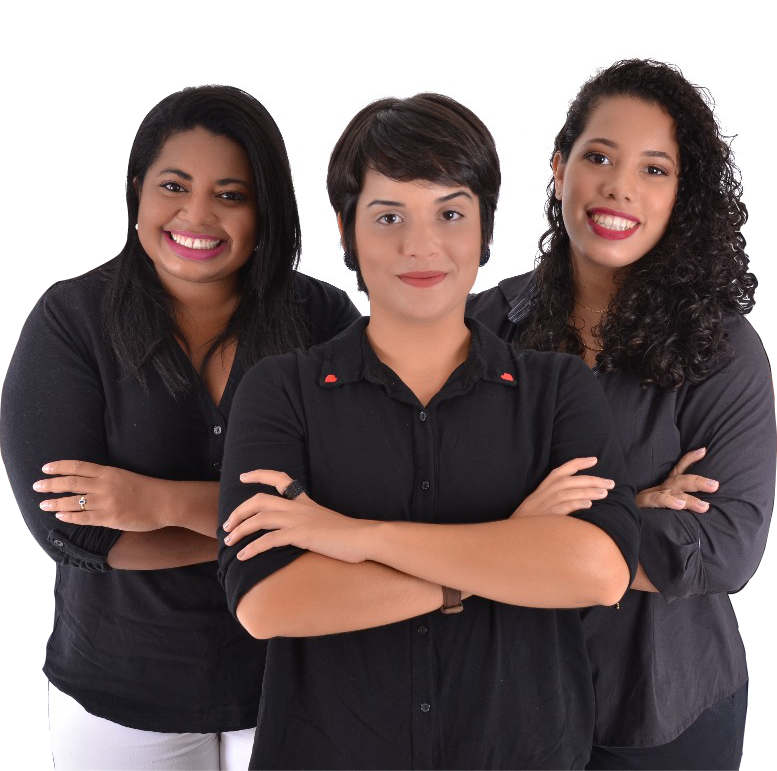

DAP Projetos Aquícolas - Consultoria e projetos

Aquicultura é o nosso Negócio
A DAP Projetos Aquícolas é uma empresa de elebaração de projetos e consultoria em aquicultura, com ênfase na piscicultura e na carcinicultura. Buscamos em nossos trabalhos alinhar a excelência técnica da nossa equipe à necessidade de nosso clientes, provendo as melhores soluções e resultados em sua produção.
Nossa equipe
Conheça nossa equpe técnica
Allyne Elins
Engenhreira de Pesca
Danielle Alves
Engenheira de Pesca
Priscilla Lima
Engenheira de Pesca
Contatos